成品并排
每张卡片都是实际动画。点“打开文件”可单独查看或下载。


Fable 5.2 三轮迭代
Fable 5.2 在聊天里出图，三轮结果都保留在 fable-5.2/ 目录。
- 第 1 轮：用户反馈：效果一般啊，细节不多
- 第 2 轮：用户反馈：不是动画了啊，也没有尾巴了（已知失败版本，静止）
- 第 3 轮（成品）：用户反馈：—（当前成品）
指标对比
以下数字由脚本直接从仓库文件统计：文件大小、动画元素数量、外部资源引用数。
| 模型 | 文件 | 格式 | 文件大小 | 动画实现 | 外部资源 | 生成脚本 |
|---|---|---|---|---|---|---|
| Claude Sonnet 5.5 | sonnet-5.5/crocodile_bike.svg |
SVG · SMIL | 198.0 KB | 140 个（SMIL） | 无 | sonnet-5.5/gen.py |
| Claude Opus 5.5 | opus-5.5/crocodile_bike.svg |
SVG · SMIL | 69.8 KB | 55 个（SMIL） | 无 | opus-5.5/gen.py |
| Claude Fable 5.2 · 第 3 轮 | fable-5.2/v3.html |
HTML · JavaScript | 25.8 KB | JS 逐帧驱动 | 无 | 无 |
| Claude Haiku 5.5 | haiku-5.5/crocodile_bike.svg |
SVG · SMIL | 86.0 KB | 46 个（SMIL） | 无 | haiku-5.5/gen.py |
| Fable 5.2 · 第 1 轮 | fable-5.2/v1.html |
HTML · JavaScript | 13.3 KB | JS 逐帧驱动 | 无 | 无 |
| Fable 5.2 · 第 2 轮 | fable-5.2/v2.html |
HTML · JavaScript | 25.3 KB | JS 逐帧驱动 | 无 | 无 |
| Fable 5.2 · 第 3 轮（成品） | fable-5.2/v3.html |
HTML · JavaScript | 25.8 KB | JS 逐帧驱动 | 无 | 无 |
要点
- Claude Sonnet 5.5：逐帧 IK 关键帧、d 属性形变的尾巴与围巾、多层视差背景
- Claude Opus 5.5：反向运动学预计算 48 帧、尾灯闪烁、扬尘与速度线
- Claude Fable 5.2 · 第 3 轮：内嵌 SVG，由 requestAnimationFrame 逐帧驱动；需下载后用浏览器打开
- Claude Haiku 5.5：逐帧 IK 脚踏、固定齿轮联动、头盔与围巾，尾巴与围巾行波形变
这是一次性对比，不是评分。文件大小和元素数只反映实现方式，不直接代表画面好坏，好坏请以上面的预览为准。